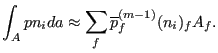
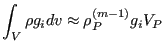
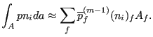
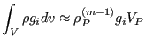
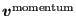
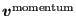

Keyword type: model definition, material
This option is used to define the magnetic permeability of a
material. There are no parameters. The material is supposed to be isotropic. The constant may be temperature
dependent. The unit of the magnetic permeability coefficient is the unit of
force divided by the square of the unit of electrical current. In SI-units
this is N/A or Henry/m. The magnetic permeability may be viewed as the
product of the relative magnetic permeability (dimensionless)  with the
permeability of vacuum .
or Henry/m. The magnetic permeability may be viewed as the
product of the relative magnetic permeability (dimensionless)  with the
permeability of vacuum .
Following the magnetic permeability constant the user is supposed to define the domain for which this material is used. In an electromagnetic calculation there are three domains:
For more details the reader is referred to the section on electromagnetism.
First line:
Following line:
Example: *MAGNETIC PERMEABILITY 1.255987E-6,2
tells you that the magnetic permeability coefficient is 1.255987  10, independent
of temperature (if SI-units are used this is the magnetic permeability of
copper). The domain for which this material is defined is the A,V-domain.
10, independent
of temperature (if SI-units are used this is the magnetic permeability of
copper). The domain for which this material is defined is the A,V-domain.
Example files: induction.